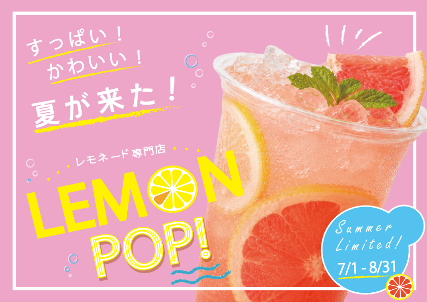

架空のレモネード専門店「LEMON POP!」の 夏季限定商品を想定した販促ポスターです。
「すっぱい！かわいい！夏が来た！」をテーマに、 明るく元気で、思わず目に留まる ポップなデザインを目指しました。

10代後半〜30代の女性を中心に、 SNSで話題のお店や季節限定の商品に 興味を持つ若い世代を想定しました。
ピンクをベースに、レモンイエローと水色を アクセントとして使用。 夏らしい爽やかさと、弾けるような楽しさを 感じられる配色にしました。
商品写真を大きく配置し、 あえてフレームからはみ出させることで 勢いと立体感を表現しました。 「LEMON」の“O”をレモンの輪切りに置き換え、 ロゴにも遊び心を加えています。